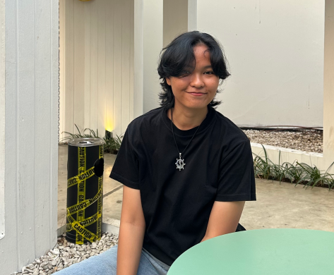

Keahlian Teknis
- Dapat menggunakan Adobe Family
- Memahami keseimbangan dan visual yang baik dalam sebuah desain
Curriculum Vitae Mahasiswa Fakultas Ilmu Komputer

Halo! Saya Shery Najma Nafisa, mahasiswa Sistem Informasi yang tertarik pada pengembangan web, UI/UX, desain grafis, marketing, dan juga ilmu bisnis. Saya senang belajar hal baru dan bekerja di dalam tim untuk membangun sebuah project yang berguna bagi diri sendiri maupun orang lain.
| Nama Lengkap | Shery Najma Nafisa |
|---|---|
| NIM | A12.2025.07345 |
| Tempat, Tanggal Lahir | Semarang, 11 Mei 2007 |
| Jenis Kelamin | Perempuan |
| Program Studi | Sistem Informasi |
| Fakultas | Ilmu Komputer |
| Alamat | Jl. Lamper Mijen No. 336A, Semarang |
| No | Jenjang | Institusi | Tahun |
|---|---|---|---|
| 1 | SD | SDN Lamper Kidul 02 | 2013 - 2019 |
| 2 | SMP | SMPN 2 Semarang | 2019 - 2022 |
| 3 | SMA | SMKN 4 Semarang | 2022 - 2025 |
| 4 | Kuliah (S1 Sistem Informasi) | Universitas Dian Nuswantoro | 2025 - sekarang |
| No | Waktu | Prestasi |
|---|---|---|
| 1 | Juara 3, Kejuaraan Kota Bola Basket Antar Klub di Semarang | |
| 2 | Juara 2, Festival Olahraga Jawa Barat VII 2023 | |
| 3 | Juara 3, Kejuaraan Nasional ICA |
| No | Waktu | Pengalaman |
|---|---|---|
| 1 | Desain Grafis, Agency di Semarang | |
| 2 | - | Kepengurusan ICA Jateng |
| 3 | - sekarang | Kepengurusan DNCC |
| 4 | - sekarang | Creative Manager, Lentera Group |
| 5 | Event Organizer (EO) Event Boxing |